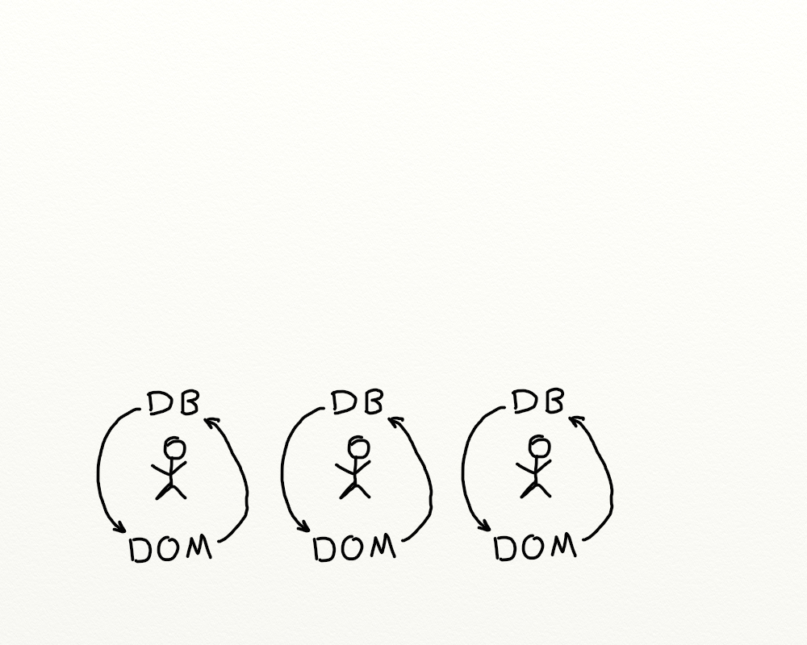
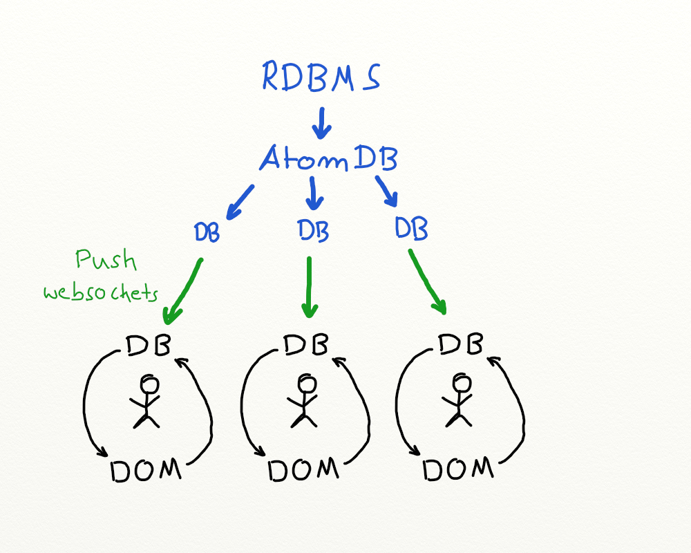

APPLYING FUNCTIONAL REACTIVE PROGRAMMING TO WRITE DYNAMIC SERVER BASED WEB-APPLICATIONS
-
Connecting Single Page Applications to the Backend without Mess and Mayhem
-
HackITZ, November 2016
Version 1.0.0
üïê Motivation 1 - Cider-CI
- periodically pull page (!) and replace
Known as pjax
- pjax = pushState + ajax
pjax works by grabbing html from your server via ajax and replacing the content of a container on your page with the ajax'd html
"pushState" ⇒ pulling
pjax pro / cons
-
simple, very little JavaScript
-
extends server side rendering
-
not suitable for complex frontend
-
frequent pulling causes load and traffic
-
time lags
Goals 1
maintain state on the server,
and push it from there to the browser on demand
üïë Motivation 2 - OO / MVC Style in Pivotal
⇒ React wont help you if you mess up managing state
Data Bindings and Connecting Components


Goal 2
ensure consistency of state everywhere
backend, frontend, components, …
üïí Motivation 3 - Segregation
There is an unnatural and unnecessary divide between back- and frontend. The gap in Madek v3 is now bigger as it has ever been before.
Rails and other MVC Frameworks: convention over configuration
breaks down when things get complex
-
"Backend": Lots of Rails + AR hacks to write complex SQL queries.
-
Middle-Layer: lots of code (presenters etc.) if you want real separation (as in MVC)
Frontend: (C)JSX
some React goodness
XML/HTML hard to read
Templates
React = require('react')
ReactDOM = require('react-dom')
RailsForm = require('../lib/forms/rails-form.cjsx')
module.exports = React.createClass
displayName: 'HeaderButton'
_onClick: (event) ->
event.preventDefault()
if @props.onAction
@props.onAction(@props.asyncAction)
return false
render: ({authToken, href, method, icon, title, name} = @props) ->
method = 'post' if not method
icon = 'icon-' + icon
onClick = if @props.onAction and @props.asyncAction then @_onClick else null
<RailsForm className='button_to' name='' method={method} action={href} authToken={authToken}>
<button className="button" type="submit" title={title} onClick={onClick}>
<i className={icon}></i>
</button>
{@props.children}
</RailsForm>
The DOM "is a tree"! Encode it es such and you get full code- and composability.
Goal 3
uniformity
close the gap between backend and frontend
üïì Core Problem - Remedy - Roadmap
The Core Problem
managing state over time and in different places
Coming Up
-
completely different approach
-
effective
-
very efficient
-
impossible to create bugs like seen
-
awesome developer experience
Roadmap
-
basics
-
single page applications
-
SPA + backend
-
consequences to developers & architecture
One further Goal
Interest YOU for the stuff.
Catch
attached to a particular technology:
Clojure + ClojureScript
üïî Functional Reactive Programming
Elliott, Conal; Hudak, Paul (1997), "Functional Reactive Animation"
The combination of functional programming, and reactive programming.
The basic idea behind reactive programming is that there are certain datatypes that represent a value "over time". Computations that involve these changing-over-time values will themselves have values that change over time.
What ?
Spreadsheet Programming

üïï Storing State with Atoms
increase and decrease example:
The Atom
Atoms provide a way to manage shared, synchronous, independent state. The intended use of
atomis to hold one of Clojure’s immutable data structures.
The Atom cont.
Interesting
- no
locking - transactions, MVCC
Extremely useful
-
support validators ⇒ schema
-
watchable
üïï Reactive Programming - Atoms - Reagent
Atoms and Reactive Programming
imagine: atom ≅ cell of a spreadsheet
a3is an atom- value of
a1ora2change ⇒a3will get updated[^lazy][^reaction] - evaluation can be eager or lazy, depending on the environment and library
Reagent
-
"Minimalistic React for ClojureScript"
see
"Managing state in Reagent"
üïñ Single Page Applications
Single-Page Applications (SPAs) are Web apps that load a single HTML page and dynamically update that page as the user interacts with the app ... without constant page reloads. (ASP.NET)We consider a webapp without data exchange to or from the server for now.
re-frame
re-frame is a pattern for writing SPAs in ClojureScript, using Reagent.
"It's MVC, Jim, but not as we know it". (re-frame)
Honestly, it is not MVC!
You will find the patterns used in re-frame in other talks, libraries, frameworks. It is all over the place.
You should read the re-frame documentation. It is witty in all of its meanings.
re-frame key features

-
One and only one database!
-
Data flows from the database to the DOM.
-
Events cause the database to change.
-
Events never manipulate the DOM directly.
no shortcuts!
One Database ?
Technically, you can have multiple databases.
Their signal graph must form an acyclic directed graph.
Make sure you don't shortcut. The Dom is always "the sink".
Do not complicate things unnecessarily ⇒ just use one database!
These rules are less out of a technical necessity. They help us to avoid unnecessary complexity and focus on the features.Define a Schema and Validate!
1(ns cider-ci.repository.fetch-and-update.db-schema 2 (:require [schema.core :as schema])) 3 4(def schema 5 {:last_fetched_at (schema/maybe org.joda.time.DateTime) 6 :last_error (schema/maybe String) 7 :last_error_at (schema/maybe org.joda.time.DateTime) 8 :updated_at org.joda.time.DateTime 9 :state (schema/enum "error" "fetching" "initializing" "ok" "waiting") 10 :pending? Boolean })
üïò SPAs interacting with the Server
-
At least a part of the routes are SPAs.
-
Updated state on the server needs to be reflected on the client.
⇒ extending the re-frame concept


But this is not "webscale"
No, but on how many cores does your application run right now?

üìå Push for the channel Server → Client
- probably WebSockets
- push diffs !
We push the state in the spirit of reactive programming.
nothing else, no RPC style, nothing !
⇒ WebSockets via ptaoussanis/sente seem to work rather well

üåê REST for the Channel Client → Server
We can use the same routes for the API and the frontend!
-
will save you a ton of work
-
enables a certain kind of architecture
üí° We do Not Sync
Two (n-) way syncing data is very hard/expensive to implement. So we just do not do it.
üïö Benefits - Developer Experience - Architecture
♻ Uniform Programming Clojure + ClojureScript
Our primary goal is to implement features; not to write HTML, React, SQL, ActiveRecord, …
Traditional frameworks foster separation by technology and overhead in communication.
-
same code on the server and client (almost)
-
it works, actually it is awesome!
üå≤ Uniform Structures
It is all just data - trees mostly.
-
SQL kk/honeysql
Lisp's homoiconicity really flies here!
üöÄ ClojureScript Programming Experience
It is really better than writing pure JavaScript!
-
source maps
-
interactive programming with bhauman/lein-figwheel
Demo?
üè† Architecture
Most application have a scrum driven (i.e. non at all) architecture.
On the next level the architectures are mostly technology driven.
We should include the features and demands in our architectures.
üçè Feature Driven Architecture
Cider-CI Architecture Refactoring
⇒ cheaper and easier changes and refactorings
üïõ Final Words
Why should you care?
-
JavaScript has to many gotchas as a general platform on the server.
-
Ruby (on Rails), PHP, Python, …, will never run in the browser for real. They have also too many weaknesses on the server.
Imho, we have to move and the future will be either:
The enterprise stack Angular 2/3 + server technology X, or the distinguishable alternative Clojure + ClojureScript.
What do you choose?
THE END
Thank you!